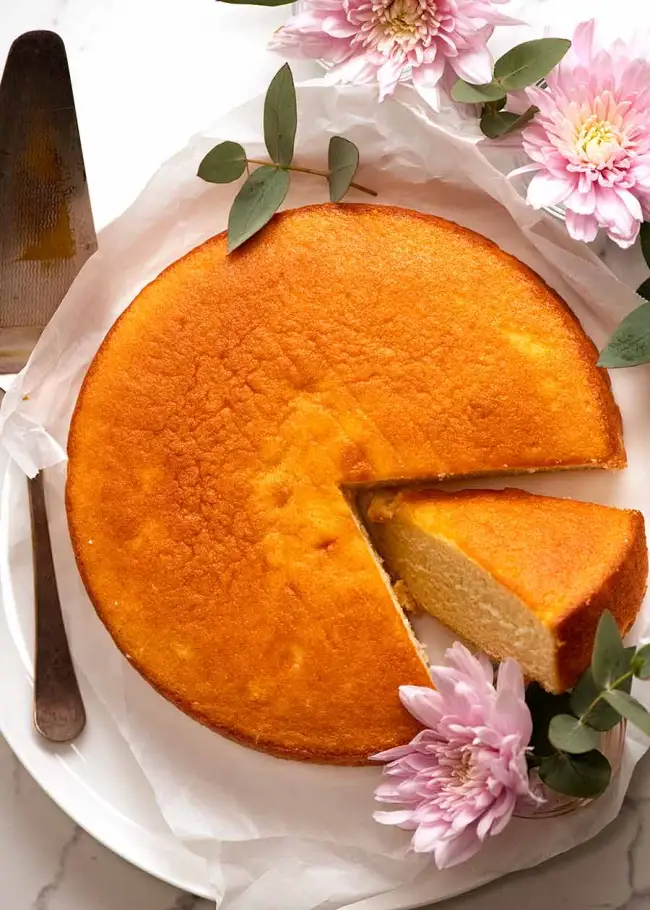

Cake Recipe

This IS Cake
Ingredients and setup of Cake
Ingredients for cake
- 3 cups of Flour
- 4 Eggs
- 1/2 of olive oil
- 2 teaspoon of baking soda
- 1 cup of milk
- 2 tsp vanilla essence
- 1 1/2cup of sugar
- 2 bowls
- A whisk
Steps of preparing Cake
- Begin by mixing sugar and olive oil together. Whisk well until light and fluffy with a manual whisker or a fork. Once done, add the beaten eggs and blend well. Beat further so that the mixture turns white and creamy.
- Sift together the all-purpose flour and baking soda.Add this to the egg mixture. If required, add a little milk and mix till the batter is fluffy and sofT. Add vanilla essence and blend well.
- Now, take a baking tin to cook the cake and grease it well using some olive oil, then sprinkle some all-purpose flour on it
- Pour the prepared cake batter into the prepared tin and place it on a stand in a eletric oven
- cook at 180 degrees for 30-35 minutes.
- Insert a knife or a metal skewer into the cake and if it comes out clean, then the cake is ready
- Decorate to you're desire